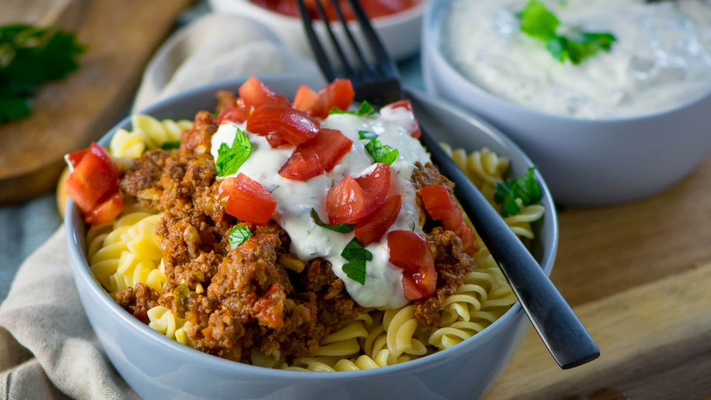

Türkische Hackfleisch Pasta mit Joghurtsauce
- 500 g Nudeln
- 500 g griechischer Joghurt
- 500 g Rinderhackfleisch
oder Lamm
- 2 Zehe(n) Knoblauch
- ½ Bund Petersilie
frisch
- 1 Stück Zwiebel
- 2 EL Olivenöl
- 1 EL Tomatenmark
- 2 EL Ajvar
- 400 g gehackte Tomaten
- 1 Stück Zucchini
klein
- 5 Stück Tomaten
z.B. frische Strauchtomaten
- etwas Salz und Pfeffer